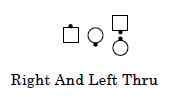

Some calls that are defined to start from Facing Couples are also proper starting from a Right-Hand Ocean Wave. Examples include Right And Left Thru and Square Thru. In these cases, the dancers have already stepped forward toward the facing dancer and are ready to complete the remaining action of the directed call.
For the sake of dancer comprehension and teaching purposes, it may be necessary initially to have the dancers back up into facing couples, then step back into the wave and complete the call.
While the rule is called the Ocean Wave Rule, it is generalized to include Mini-Wave (Facing Dancers) and Tidal Wave (Facing Lines), etc. Examples include Pass Thru, Slide Thru, Box The Gnat, and Double Pass Thru (from a Right-Hand 1/4 Tag), and Pass To The Center (from Right-Hand Ocean Waves).
In order for the Ocean Wave Rule to apply, the initial dance action of the call must start with a Box The Gnat, Pass Thru, or Right Pull By. In addition, the call must not be defined to have a different dance action from an Ocean Wave. For example, the call Circulate is defined from Eight Chain Thru and from Ocean Waves. It would be improper to call Circulate from Ocean Waves and expect dancers to dance it as a Step Thru based on the Ocean Wave Rule because they would naturally apply the definition of Circulate from Ocean Waves.
The following mixed Mini-Wave and Facing Dancer starting formation, while unusual, is also proper:

The adjustment that is part of the Ocean Wave Rule does not change the effect of the call. It neither adds nor subtracts parts or changes the use of fractions. It is as if any dancer in a mini-wave had first stepped back into facing dancers and then all did the call. For example, from a Right-Hand Mini-Wave Dosado ends in Facing Dancers, not in a Right-Hand Mini-Wave.
The Ocean Wave Rule also applies to calls that normally start from Facing Couples when the dancers are in a Left Hand Ocean Wave. In these cases, the caller must direct a left hand call (e.g., Left Square Thru). See "Additional Detail: Commands: Extensions like Reverse Wheel Around".
When half of the dancers are in a Mini-Wave, and the other half of the dancers are Facing Dancers, and the call is a 2-dancer call (e.g., Box The Gnat, Slide Thru, Pass Thru) the caller should make clear who is to do the call (e.g., Everyone or Those Facing).
Timing: Application of the Ocean Wave Rule does not change the timing of the call.
© Copyright 1994, 2000-2017 by CALLERLAB Inc., The International Association of Square Dance Callers. Permission to reprint, republish, and create derivative works without royalty is hereby granted, provided this notice appears. Publication on the Internet of derivative works without royalty is hereby granted provided this notice appears. Permission to quote parts or all of this document without royalty is hereby granted, provided this notice is included. Information contained herein shall not be changed nor revised in any derivation or publication.